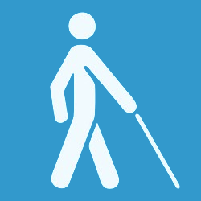
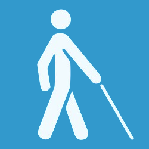

Vítor Viana
Full-Stack Developer
Este site possui recurços de acessibilidade e suporte a leitores de tela.
Saiba Mais
Este site possui recurços de acessibilidade e suporte a leitores de tela.
Saiba Mais
Descrição visual da seção: Esta seção contém uma lista de itens, onde cada item é um quadrado preto com bordas finas e levemente arredondadas, de cor azul. Dentro de cada quadrado, há uma imagem que representa uma tecnologia específica. Ao passar o mouse sobre qualquer item, uma animação é ativada, fazendo o item flutuar verticalmente com um movimento de subida e descida.


Descrição visual da seção: Esta seção contém uma lista de itens, onde cada item é um retângulo preto com bordas finas e levemente arredondadas de cor azul. Dentro de cada retângulo, há quatro elementos: uma imagem que representa o projeto, um título com o nome do projeto, uma breve descrição do projeto, uma lista das tecnologias utilizadas para a criação do projeto e um botão azul que direciona para a página do projeto.

Este projeto tem como finalidade o envio de e-mails através de um formulário HTML que faz uma requisição HTTP para uma aplicação web service responsável pelo envio de e-mails via SMTP. Este sistema foi dividido em dois módulos principais: o frontend, que é a aplicação cliente, e o backend, que é a aplicação servidor.
Tecnologias: Python • FastAPI • HTML • CSS
Abrir Projeto
Site desenvolvido para a IELP Engenharia, uma empresa especializada em serviços de engenharia elétrica.
Tecnologias: WordPress • Elementor • Figma
Abrir Projeto
O Busca CEP retorna endereços através de ceps fornecidos. Para este projeto utilizei a API viacep.com.br/ws/"CEP"/json.
Tecnologias: JavaScript • React.js • CSS
Abrir Projeto
Este projeto é um dos meus favoritos e foi um dos meus primeiros. Eu o desenvolvi para ajudar meus professores de Jiu-Jitsu. Quando o criei não tinha muita noção de como funcionava o processo de desenvolvimento de um sistema web. Trata-se de um sistema de gerenciamento de alunos que controla a presença e a ficha técnica, incluindo graduação, peso e todos os requisitos de um atleta.
Tecnologias: Python • Flask • SQLite • JavaScript • CSS • HTML
Abrir ProjetoOlá, seja bem-vindo! Eu me chamo V√≠tor Viana e sou estudante de Sistemas de Informa√ß√£o na UFFüéì, curso que escolhi devido √† minha enorme curiosidade pela tecnologia. Sempre tive interesse em descobrir como os aplicativos, sites e a internet funcionavam, e sempre tive o desejo de aprender a criar meus pr√≥prios sistemas. Para mim, √© incr√≠vel ter uma ideia e poder torná-la realidade atrav√©s da tecnologia. Al√©m disso, sou uma pessoa que ama esportes e m√∫sica. Sou lutador de jiu-jitsu, faixa roxaü•ã, e sou instrumentista, adoro tocar bateria e fazer um barulhoüé∂üòä.
Atualmente, trabalho de forma autônoma criando sites para empresas. Isso me ajudou bastante a aprimorar minhas habilidades no desenvolvimento front-end e no design de páginas da web. Quando consigo um cliente, a primeira coisa que faço é entender o negócio em que ele trabalha e conhecer seus concorrentes. Somente então começo a etapa de criação do site. Depois de compreender o negócio, começo a criar o design da página junto com o cliente, utilizando o Figma. Após a aprovação do design, passo para a etapa de desenvolvimento. Esta etapa pode variar de acordo com as tecnologias usadas. Dependendo do nível de complexidade do site, posso usar o WordPress ou criar o site utilizando JavaScript, junto com CSS e HTML.
É isso! Falei um pouco sobre mim e sobre o que faço de forma resumida. Espero que tenha gostado do meu site, ele é simples mas fiz com bastante carinho❤.
E se voc√™ chegou at√© aqui, agrade√ßo sua aten√ß√£oüí™üôè!